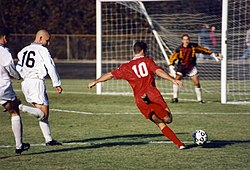

HOBİLERİM VE SEVDİĞİM ETKİNLİKLER
-
SATRANÇ
- Vladimir Kramnik
- Viswanathan Anand
- Ruslan Panamariov
- Rustam Kasımdzhanov
- Veselin Topalov
- Vladimir Kramnik
- Viswanathan Anand
- Magnus Carlsen
- Ding Liren
-
FUTBOL
- Pele
- Maradona
- Cristiano Ronaldo
- Lionel Messi
- Zinedine Zidane
- Ronaldinho
- Zlatan Ibrahimovic
- Andres Iniesta
- Ronaldo(Brezilyalı)
Tarihçe ve Kısa Teknik Bilgiler
Satranç oynamaktan çok zevk aldığımı zaten anasayfada söylemiştim ama şimdi biraz daha
ayrıntılı değinip çeşitli veriler ekleyeceğim.
Satrancın icadı çok uzun yıllar öncesine Hindistan'a dayanır. Birçok padişah, hükümdar, kral
ve sultanlar tarafından oynanmış olup hala
sevilerek oynanan ve izlenen bir oyundur. İlk başta o zamanın tanımlanan "üst tabaka"
insanları oynamaktaydı. Sonrasında birçok kıtaya
yayıldı ve genel kabul gördü.
Temelde basit gibi görünen bu oyun altında birçok teori barındırır. 64 kareden oluşan oyunda her taşın belirli bir görevi vardır. Örneğin kale sadece dik ve yan gidebilir , asla çapraz gidemez. Oyundaki amaç karşıdaki şahın gidebileceği yerleri kapatmak ve onu mat etmek.
Her taşın belirli bir değeri vardır. Vezir: 9 Puan Kale: 5 Puan Fil: 3 Puan At: 3 Puan Piyon: 1 Puan 'dır. Oyundaki en güçlü taş vezirdir çünkü hem düz hem yan hem de çapraz gidebilmektedir. Bu sebeple çoğu oyuncu vezirini kaybedince oyundan korkak bir şekilde çekilmektedir.
Temelde basit gibi görünen bu oyun altında birçok teori barındırır. 64 kareden oluşan oyunda her taşın belirli bir görevi vardır. Örneğin kale sadece dik ve yan gidebilir , asla çapraz gidemez. Oyundaki amaç karşıdaki şahın gidebileceği yerleri kapatmak ve onu mat etmek.
Her taşın belirli bir değeri vardır. Vezir: 9 Puan Kale: 5 Puan Fil: 3 Puan At: 3 Puan Piyon: 1 Puan 'dır. Oyundaki en güçlü taş vezirdir çünkü hem düz hem yan hem de çapraz gidebilmektedir. Bu sebeple çoğu oyuncu vezirini kaybedince oyundan korkak bir şekilde çekilmektedir.

Yakın tarih şampiyonları
Tarihçe ve Kısa Teknik Bilgiler
İlk olarak İngiltere'de oynanmış olan bu oyun şimdiye kadar birçok kural değişikliği ve yeni
özelliklerle
günümüzdeki o tutku veren haline gelmiştir. Çoğu spor dalında olduğu gibi futbol da ilk olarak
saraylarda,
krallıklarda oynanmaya başlanmıştır. Gelen elçiler ve ziyaretçiler vasıtasıyla birçok ülkeye ve
kıtaya yaılmıştır.
Şu anda ise 7 kıtanın 6'sında turnuvalar düzenlenmektedir. Başlıcaları UEFA Şampiyonlar Ligi,
FIFA Dünya Kupası,
UEFA Avrupa Ligi...
Futbol 11 kişilik iki takımla oynanan bir oyundur. Amaç karşı takımın kalesine topu sokmaktır.
Tabi oyunun birçok kuralı vardır. Örneğin kural dışı rakibe yapılan bir müdahalede faul adında topun karşı takıma geçmesi ve vuruşu yapana kadar kimsenin vurmaması gereken bir kural vardır. Gereğinden fazla yapılan bu müdahalelerde sarı ve kırmızı renklerinde olmak üzere 2 kart çeşidi vardır.
Penaltı, yapılan kural dışı müdahale ceza sahası içindeyse oluşan durumdur. Penaltı yapılan takımdan bir oyuncu penaltı vuruşunu yapar ve 11 metrelik mesafeden ceza sahasında rakipten sadece kaleci varken yapılan durumdur. Bu yönüyle büyük bir avantajdır.
Futbol 11 kişilik iki takımla oynanan bir oyundur. Amaç karşı takımın kalesine topu sokmaktır.
Tabi oyunun birçok kuralı vardır. Örneğin kural dışı rakibe yapılan bir müdahalede faul adında topun karşı takıma geçmesi ve vuruşu yapana kadar kimsenin vurmaması gereken bir kural vardır. Gereğinden fazla yapılan bu müdahalelerde sarı ve kırmızı renklerinde olmak üzere 2 kart çeşidi vardır.
Penaltı, yapılan kural dışı müdahale ceza sahası içindeyse oluşan durumdur. Penaltı yapılan takımdan bir oyuncu penaltı vuruşunu yapar ve 11 metrelik mesafeden ceza sahasında rakipten sadece kaleci varken yapılan durumdur. Bu yönüyle büyük bir avantajdır.

İz bırakmış futbolcular